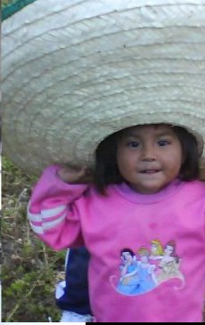
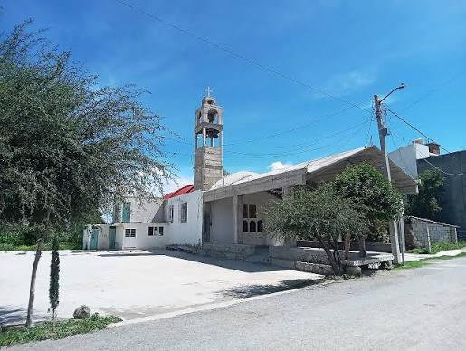
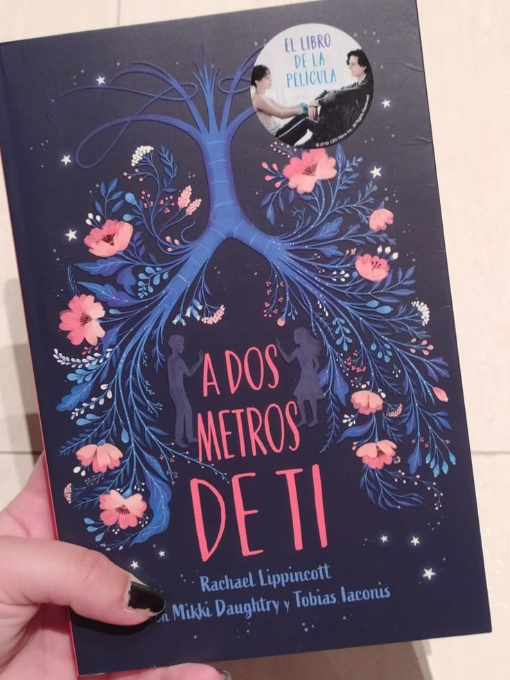
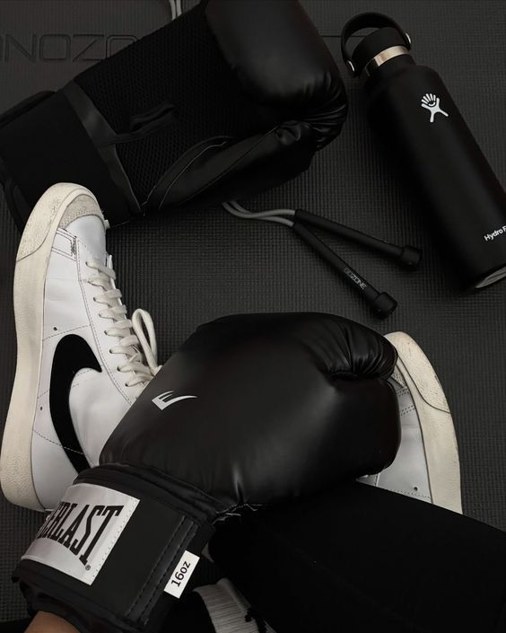
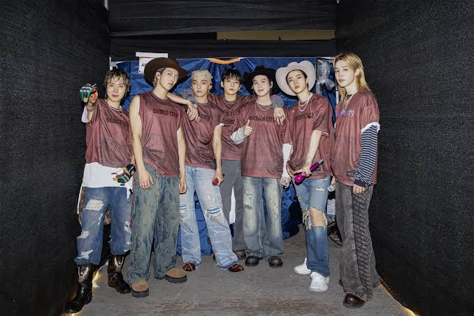

Pasatiempo
Mi pasatiempo es leer Historias
Conoce un poco más sobre mí
Mi nombre es Dulce Fernanda Rodriguez Perez
Esta es mi página web personal.
Soy una persona que disfruta aprender cosas nuevas. Me gusta Leer, Cocinar, mas que nada estar activa y escuchar musica de todo un poco pero mas de bts

Soy de Boxtha Manzana 3

Actualmente estudio Ingenieria en Tecnologias De La Informacion y Comunicancion (TIC's) Elegí esta carrera porque en el Bachillerato estudie Progrmaccion y me gusto programar y como la carrera de tics lo lleva y es un poco mas amplio en cuestines de trabajo me intereso mucho
Mi pasatiempo es leer Historias

Hacer ejercicio (actualmente estoy practicando box)

Escuchar musica

Estas son algunas páginas que me gustan:
YouTube Instagram
Gracias por visitar mi página.
Enviarme un correo